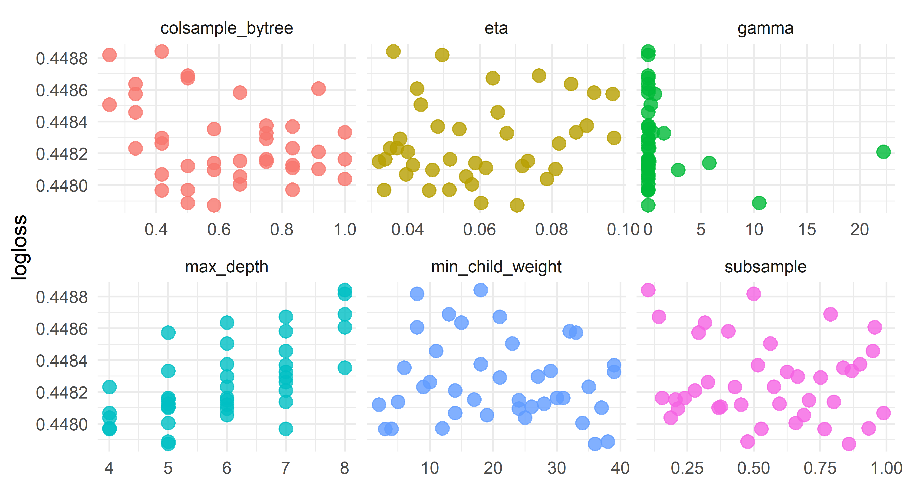
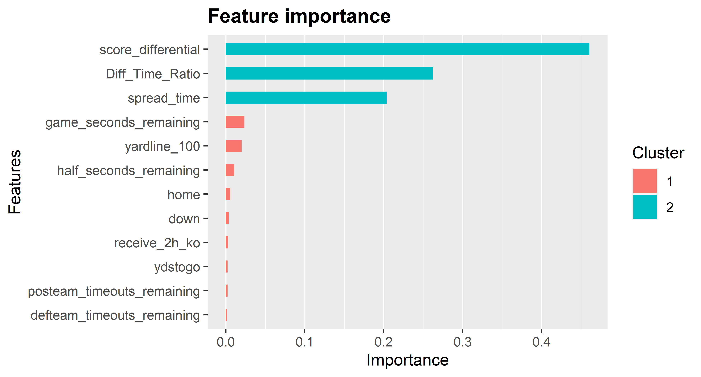

Intro
I get a lot of questions about win probability / expected points models and xgboost. As demonstrated here, tree-based models like xgboost can offer an improvement over simpler methods such as logistic regression. This post is designed to show how to tune and train a win probability model.
Before we go on, a couple links:
In general, the xgboost documentation is very, very good so I recommend checking it out if you plan to use it. Parts of this post are drawn from the extremely helplful Richard Anderson OSF post, which in turn is based on this excellent post from Julia Silge.
This overview skips over some important steps like exploratory data analysis and feature engineering. This also doesn’t cover handling NAs (which I just drop), categorical variables, and probably a lot of other stuff. All of those are important steps, but covering them would probably worth a separate post on its own. For this one, we’re taking a starting point of knowing which features will be included and wanting to properly tune and train a model.
Boring preliminary stuff
Let’s load the necessary packages and set some variables needed later.
# packages
library(nflfastR)
library(splitTools)
library(dials)
library(xgboost)
library(ggplot2)
library(tidyverse)
set.seed(2013) # gohawks
# this should be the default u y do this R
options(scipen = 999999)
# size of hyperparameter grid to search over
# if you don't have a potato computer, can set this to a bigger number
grid_size <- 40
Get the data
First let’s load the data from nflfastR, label it (1 = win, 0 = loss), and keep the necessary columns.
future::plan("multisession")
pbp_data <- nflfastR::load_pbp(2001:2020) %>%
dplyr::mutate(
# label data with whether possession team ended up winning
# note that NA result and ties dealt with later
label = dplyr::case_when(
result > 0 & posteam == home_team ~ 1,
result < 0 & posteam == away_team ~ 1,
TRUE ~ 0
),
# create home indicator used in model
home = ifelse(posteam == home_team, 1, 0)
) %>%
# creates Diff_Time_Ratio and spread_time
nflfastR:::prepare_wp_data() %>%
# don't deal with NA, just drop
dplyr::filter(
!is.na(down),
!is.na(game_seconds_remaining),
!is.na(yardline_100),
!is.na(score_differential),
# overtime is hard
qtr <= 4,
!is.na(result),
!is.na(posteam),
# throw out ties
result != 0
) %>%
dplyr::select(
# label and identifying info
label,
game_id,
season,
# features
receive_2h_ko,
spread_time,
home,
half_seconds_remaining,
game_seconds_remaining,
Diff_Time_Ratio,
score_differential,
down,
ydstogo,
yardline_100,
posteam_timeouts_remaining,
defteam_timeouts_remaining
)
Make some splits
Let’s hold out 2019 and 2020 for the final test and chop the remainder into folds for cross validation. This is somewhat different than a typical tutorial because we can’t just take random samples of the data since that would split up plays from a given game across the training and test sets, which would be bad (more on this below).
test_data <- pbp_data %>%
dplyr::filter(season >= 2019)
train_data <- pbp_data %>%
dplyr::filter(season < 2019)
# explanation of this step below
folds <- splitTools::create_folds(
y = train_data$game_id,
k = 5,
type = "grouped",
invert = TRUE
)
train_labels <- train_data %>%
dplyr::select(label)
# get rid of extra columns
train_data <- train_data %>%
dplyr::select(-season, -game_id, -label)
str(folds)
List of 5
$ Fold1: int [1:142027] 141 142 143 144 145 146 147 148 149 150 ...
$ Fold2: int [1:141614] 1891 1892 1893 1894 1895 1896 1897 1898 1899 1900 ...
$ Fold3: int [1:141321] 1 2 3 4 5 6 7 8 9 10 ...
$ Fold4: int [1:141883] 579 580 581 582 583 584 585 586 587 588 ...
$ Fold5: int [1:141960] 718 719 720 721 722 723 724 725 726 727 ...Above, we create the folds object that will be passed to xgb.cv later. From the xgboost documentation: “folds (list) provides a possibility to use a list of pre-defined CV folds (each element must be a vector of test fold’s indices).”
We are thus using splitTools to create such folds. From the splitTools docs, what the above is doing:
y: “Either the variable used forstratificationorgroupedsplits.” Here, we’re going to “group” based ongame_id, which means that “groups specified byyare kept together when splitting” as wanted.k: number of folds. Typically 5 or 10type: As noted above, “grouped” means that rows with the samegame_idare kept together when splittinginvert = TRUE: Docs: “Set toTRUEif the row numbers not in the fold are to be returned”. This is confusingly worded, but basically this means that whenTRUE, the hold-out indices for a given fold are returned (rather than the train indices). Becausexgboostrequires test fold indices (see bolded part above), we want this to be the case.
The very important note here is that since labels are shared across observations – i.e., for a given team in a given game, each of their rows will be labeled either 1 or 0 since they either win or they don’t – we must be very careful to make sure that when a game is in a validation fold, there are no plays from that game in other folds. This is what the “grouped” part does above. If we failed to do this, we would experience what is referred to as “leakage” across the train and validation sets, and would encounter a very bad surprise when trying to predict out of sample because the model would overfit badly.
An alternative to what I’m doing here would be to create folds based on seasons, instead of games. This is what I did for nflfastR since I hadn’t discovered how to easily split based on games (thanks to Andrew Patton for the tip), but it shouldn’t make much of a difference regardless. Finally, if you’re modeling something without interdependence across observations (e.g., an expected completion model where each observation is a one-off), you can skip manually creating folds and just let xgb.cv handle the folds by using the nfold parameter.
Tuning
Let’s use dials to create a grid of hyperparameters to search over. This is one thing from tidymodels that I have found very useful, though note that it has different names for the hyperparameters than xgboost so there’s some renaming things at the end.
grid <- dials::grid_latin_hypercube(
# this finalize thing is because mtry depends on # of columns in data
dials::finalize(dials::mtry(), train_data),
dials::min_n(),
dials::tree_depth(),
# to force learn_rate to not be crazy small like dials defaults to
# because my computer is slow
# if you're trying this for a different problem, expand the range here
# by using more negative values
dials::learn_rate(range = c(-1.5, -0.5), trans = scales::log10_trans()),
dials::loss_reduction(),
sample_size = dials::sample_prop(),
size = grid_size
) %>%
dplyr::mutate(
# has to be between 0 and 1 for xgb
# for some reason mtry gives the number of columns rather than proportion
mtry = mtry / length(train_data),
# see note below
monotone_constraints = "(0, 0, 0, 0, 0, 1, 1, -1, -1, -1, 1, -1)"
# for the monotone constraints
# these are notes to myself to make sure the constraints are in the right order
# the order of the constraints needs to match up with the columns in the df
# receive_2h_ko, 0
# spread_time, 0
# home, 0
# half_seconds_remaining, 0
# game_seconds_remaining, 0
# Diff_Time_Ratio, 1
# score_differential, 1
# down, -1
# ydstogo, -1
# yardline_100, -1
# posteam_timeouts_remaining, 1
# defteam_timeouts_remaining, -1
) %>%
# make these the right names for xgb
dplyr::rename(
eta = learn_rate,
gamma = loss_reduction,
subsample = sample_size,
colsample_bytree = mtry,
max_depth = tree_depth,
min_child_weight = min_n
)
grid
# A tibble: 40 x 7
colsample_bytree min_child_weight max_depth eta gamma
<dbl> <int> <int> <dbl> <dbl>
1 0.583 33 5 0.0600 1.91e+ 1
2 0.167 26 12 0.237 5.98e- 7
3 0.417 36 13 0.155 6.46e- 1
4 0.5 20 12 0.0925 7.95e- 8
5 0.833 34 3 0.167 2.55e- 9
6 0.333 31 4 0.254 7.40e+ 0
7 0.0833 6 3 0.186 2.21e- 4
8 0.25 26 8 0.228 3.22e- 5
9 0.0833 19 2 0.0383 2.23e-10
10 0.667 38 11 0.0783 5.85e-10
# ... with 30 more rows, and 2 more variables: subsample <dbl>,
# monotone_constraints <chr>A lot of notes here:
- See the docs for what monotone constraints do. In short, we want to impose constraints on certain columns such that larger (or smaller) values for those columns can only increase (or decrease) the prediction. For example, all else equal, we want a team’s win probability to be higher if they are ahead by more points; or stated another way, we want it to be impossible for increasing the size of a team’s lead to result in a decrease in win probability
- The
sizeparameter tells it how many rows you want to fill out to search over. We definedgrid_sizeabove (normally I would just put the size directly into here but I have it defined at the top to make testing the knitting of this file quicker) - I do some renaming so that the things are called what
xgboostexpects
And now we need a function to take a row from our grid and trains the model using those hyperparameters using xgb.cv. This is the sort of thing that tidymodels would handle but I find it easier to just write a function myself. For example, passing monotone constraints to xgboost using tidymodels requires writing a custom function anyway.
# function to perform xgb.cv for a given row in a hyperparameter grid
get_row <- function(row) {
params <-
list(
booster = "gbtree",
objective = "binary:logistic",
eval_metric = c("logloss"),
eta = row$eta,
gamma = row$gamma,
subsample = row$subsample,
colsample_bytree = row$colsample_bytree,
max_depth = row$max_depth,
min_child_weight = row$min_child_weight,
monotone_constraints = row$monotone_constraints
)
# do the cross validation
wp_cv_model <- xgboost::xgb.cv(
data = as.matrix(train_data),
label = train_labels$label,
params = params,
# this doesn't matter with early stopping in xgb.cv, just set a big number
# the actual optimal rounds will be found in this tuning process
nrounds = 15000,
# created above
folds = folds,
metrics = list("logloss"),
early_stopping_rounds = 50,
print_every_n = 50
)
# bundle up the results together for returning
output <- params
output$iter <- wp_cv_model$best_iteration
output$logloss <- wp_cv_model$evaluation_log[output$iter]$test_logloss_mean
row_result <- bind_rows(output)
return(row_result)
}
Now we’re ready to run the function above on each row of our hyperparameter grid.
Let’s take a look at what we’ve got with thanks to the code from Julia Silge’s post mentioned above:
results %>%
dplyr::select(logloss, eta, gamma, subsample, colsample_bytree, max_depth, min_child_weight) %>%
tidyr::pivot_longer(
eta:min_child_weight,
values_to = "value",
names_to = "parameter"
) %>%
ggplot(aes(value, logloss, color = parameter)) +
geom_point(alpha = 0.8, show.legend = FALSE, size = 3) +
facet_wrap(~parameter, scales = "free_x") +
labs(x = NULL, y = "logloss") +
theme_minimal()

Looking at the results, it appears that we want max_depth somewhere in the 4-8 range, colsample_bytree definitely greater than 1/4, and learn_rate no greater than 0.10. So let’s hone in on that and re-tune. This is partially done to show an example of giving dials some ranges to work with rather than letting it pull numbers from anywhere:
grid <- dials::grid_latin_hypercube(
# don't need the finalize business since we're using length in here
dials::mtry(range = c(length(train_data) / 4, length(train_data))),
dials::min_n(),
# force tree depth to be between 3 and 5
dials::tree_depth(range = c(4L, 8L)),
# to force learn_rate to not be crazy small like dials defaults to
dials::learn_rate(range = c(-1.5, -1), trans = scales::log10_trans()),
dials::loss_reduction(),
sample_size = dials::sample_prop(),
size = grid_size
) %>%
dplyr::mutate(
# has to be between 0 and 1 for xgb
# for some reason mtry gives the number of columns rather than proportion
mtry = mtry / length(train_data),
monotone_constraints = "(0, 0, 0, 0, 0, 1, 1, -1, -1, -1, 1, -1)"
) %>%
# make these the right names for xgb
dplyr::rename(
eta = learn_rate,
gamma = loss_reduction,
subsample = sample_size,
colsample_bytree = mtry,
max_depth = tree_depth,
min_child_weight = min_n
)
grid
# A tibble: 40 x 7
colsample_bytree min_child_weight max_depth eta gamma
<dbl> <int> <int> <dbl> <dbl>
1 0.917 8 8 0.0426 5.30e-3
2 0.75 18 6 0.0897 8.48e-3
3 0.417 27 6 0.0973 2.38e-4
4 0.5 38 5 0.0604 1.05e+1
5 0.75 31 6 0.0337 1.79e-2
6 0.75 39 7 0.0674 1.45e+0
7 0.25 8 8 0.0495 1.13e-5
8 0.417 3 4 0.0459 1.36e-9
9 0.417 10 7 0.0820 6.86e-5
10 0.667 19 6 0.0562 2.72e-6
# ... with 30 more rows, and 2 more variables: subsample <dbl>,
# monotone_constraints <chr>And now we can re-run our function with the new grid:
And plot it again:
results %>%
dplyr::select(logloss, eta, gamma, subsample, colsample_bytree, max_depth, min_child_weight) %>%
tidyr::pivot_longer(eta:min_child_weight,
values_to = "value",
names_to = "parameter"
) %>%
ggplot(aes(value, logloss, color = parameter)) +
geom_point(alpha = 0.8, show.legend = FALSE, size = 3) +
facet_wrap(~parameter, scales = "free_x") +
labs(x = NULL, y = "logloss") +
theme_minimal()

One thing I’m curious is whether we can add a monotone constraint on spread_time, which is the time-decaying value for point spread from the perspective of the possession team. To do this, let’s modify the tuning grid with a different monotone_constraints, re-tune, and see how the best value compares. Again, this might be something that would be simpler to implement in tidymodels but I haven’t figured out how to use it well.
glue::glue(
"--BEST LOGLOSS--
No monotone constraint on spread_time:
{round(results %>% arrange(logloss) %>% dplyr::slice(1) %>% pull(logloss), 5)}
Monotone constraint on spread_time:
{round(results2 %>% arrange(logloss) %>% dplyr::slice(1) %>% pull(logloss), 5)}"
)
--BEST LOGLOSS--
No monotone constraint on spread_time:
0.44787
Monotone constraint on spread_time:
0.44826It doesn’t seem to make much of a difference but since it should be monotonic (teams favored by more should have higher win prob, and the strength of point spread should decrease as the game goes on), let’s use that model. I find it a bit puzzling that adding the constraint doesn’t actually help the logloss, but oh well.
results2 %>%
dplyr::arrange(logloss) %>%
dplyr::select(eta, subsample, colsample_bytree, max_depth, logloss, min_child_weight, iter)
# A tibble: 40 x 7
eta subsample colsample_bytree max_depth logloss
<dbl> <dbl> <dbl> <int> <dbl>
1 0.0334 0.528 0.5 7 0.448
2 0.0604 0.476 0.5 5 0.448
3 0.0543 0.837 0.583 8 0.448
4 0.0587 0.801 0.583 7 0.448
5 0.0718 0.452 0.5 6 0.448
6 0.0765 0.789 0.5 8 0.448
7 0.0378 0.751 0.75 7 0.448
8 0.0918 0.404 0.667 7 0.449
9 0.0319 0.708 0.75 6 0.449
10 0.0562 0.689 0.667 6 0.449
# ... with 30 more rows, and 2 more variables:
# min_child_weight <int>, iter <int>Collect best parameters
Now we’ve finally picked everything that we need to train the model with. We can set our params with the results from best_model, including how many rounds to train for.
params <-
list(
booster = "gbtree",
objective = "binary:logistic",
eval_metric = c("logloss"),
eta = best_model$eta,
gamma = best_model$gamma,
subsample = best_model$subsample,
colsample_bytree = best_model$colsample_bytree,
max_depth = best_model$max_depth,
min_child_weight = best_model$min_child_weight,
monotone_constraints = best_model$monotone_constraints
)
nrounds <- best_model$iter
params
$booster
[1] "gbtree"
$objective
[1] "binary:logistic"
$eval_metric
[1] "logloss"
$eta
[1] 0.03336242
$gamma
[1] 0.001755908
$subsample
[1] 0.5283268
$colsample_bytree
[1] 0.5
$max_depth
[1] 7
$min_child_weight
[1] 4
$monotone_constraints
[1] "(0, 1, 0, 0, 0, 1, 1, -1, -1, -1, 1, -1)"glue::glue("nrounds: {nrounds}")
nrounds: 588Train the model
And finally train using xgboost and the best parameters saved above:
Let’s check the variable importance.
importance <- xgboost::xgb.importance(
feature_names = colnames(wp_model),
model = wp_model
)
xgboost::xgb.ggplot.importance(importance_matrix = importance)

Unsurprisingly, score differential and the ratio of score differential to time left are the most important features. In addition, pregame point spread matters a lot.
A couple other notes:
- If you want to plot the trees, see this post here for example
- If you want to get the actual trees as data, look up
xgb.dump
Prediction
Now that we have our model, we can predict with the hold out set, which in this case is the 2019 and 2020 seasons. There might be a better way to do this, but I just join the predictions to the test dataframe.
preds <- stats::predict(
wp_model,
# get rid of the things not needed for prediction here
as.matrix(test_data %>% select(-label, -game_id, -season))
) %>%
tibble::as_tibble() %>%
dplyr::rename(wp = value) %>%
dplyr::bind_cols(test_data)
preds
# A tibble: 79,054 x 16
wp label game_id season receive_2h_ko spread_time home
<dbl> <dbl> <chr> <int> <dbl> <dbl> <dbl>
1 0.328 0 2019_01_ATL_MIN 2019 0 -3.5 0
2 0.260 0 2019_01_ATL_MIN 2019 0 -3.35 0
3 0.260 0 2019_01_ATL_MIN 2019 0 -3.21 0
4 0.323 0 2019_01_ATL_MIN 2019 0 -3.06 0
5 0.793 1 2019_01_ATL_MIN 2019 1 3.04 1
6 0.731 1 2019_01_ATL_MIN 2019 1 2.97 1
7 0.756 1 2019_01_ATL_MIN 2019 1 2.86 1
8 0.191 0 2019_01_ATL_MIN 2019 0 -2.82 0
9 0.201 0 2019_01_ATL_MIN 2019 0 -2.69 0
10 0.184 0 2019_01_ATL_MIN 2019 0 -2.57 0
# ... with 79,044 more rows, and 9 more variables:
# half_seconds_remaining <dbl>, game_seconds_remaining <dbl>,
# Diff_Time_Ratio <dbl>, score_differential <dbl>, down <dbl>,
# ydstogo <dbl>, yardline_100 <dbl>,
# posteam_timeouts_remaining <dbl>,
# defteam_timeouts_remaining <dbl>For fun, let’s see what the model thinks Green Bay’s win probability was after they elected to kick a field goal at the end of the 2020 NFC Championship Game.
preds %>%
dplyr::filter(
game_id == "2020_20_TB_GB",
between(game_seconds_remaining, 120, 140)
) %>%
dplyr::select(wp, label, game_seconds_remaining, score_differential)
# A tibble: 4 x 4
wp label game_seconds_remaining score_differential
<dbl> <dbl> <dbl> <dbl>
1 0.213 0 139 -8
2 0.185 0 135 -8
3 0.114 0 129 -8
4 0.910 1 122 5So the Bucs had an estimated win probability of about 90% to start their next possession (final row).
Model evaluation
Calculating logloss on the 2019 and 2020 test data:
MLmetrics::LogLoss(preds$wp, preds$label)
[1] 0.4270486This is better than the logloss in tuning with xgb.cv. I don’t think this is normal but it’s possible there are some data errors in older seasons that make predictions easier in 2019 and 2020. This raises the question of whether the model would be better if I didn’t use some of the oldest seasons when training, but this thing already takes too long to run on my computer.
If we wanted the test error instead of test logloss:
MLmetrics::Accuracy(
# say a team is predicted to win if they have win prob > .5
preds %>%
dplyr::mutate(pred = ifelse(wp > .5, 1, 0)) %>%
dplyr::pull(pred),
# compare to whether they actually won
preds$label
)
[1] 0.792724So about 80 percent of the time, the team expected to win on a given play ends up winning.
Finally, let’s make sure a calibration plot looks okay, with this plot inspired by the Yurko et al. paper:
plot <- preds %>%
# Create BINS for wp:
dplyr::mutate(bin_pred_prob = round(wp / 0.05) * .05) %>%
dplyr::group_by(bin_pred_prob) %>%
# Calculate the calibration results:
dplyr::summarize(
n_plays = n(),
n_wins = length(which(label == 1)),
bin_actual_prob = n_wins / n_plays
) %>%
dplyr::ungroup()
ann_text <- data.frame(
x = c(.25, 0.75), y = c(0.75, 0.25),
lab = c("More times\nthan expected", "Fewer times\nthan expected")
)
plot %>%
ggplot() +
geom_point(aes(x = bin_pred_prob, y = bin_actual_prob, size = n_plays)) +
geom_smooth(aes(x = bin_pred_prob, y = bin_actual_prob), method = "loess") +
geom_abline(slope = 1, intercept = 0, color = "black", lty = 2) +
coord_equal() +
scale_x_continuous(limits = c(0, 1)) +
scale_y_continuous(limits = c(0, 1)) +
labs(
size = "Number of plays",
x = "Estimated win probability",
y = "Observed win probability",
title = "Win prob calibration plot"
) +
geom_text(data = ann_text, aes(x = x, y = y, label = lab), size = 2) +
theme_bw() +
theme(
plot.title = element_text(hjust = 0.5),
strip.background = element_blank(),
strip.text = element_text(size = 12),
axis.title = element_text(size = 12),
axis.text.y = element_text(size = 12),
axis.text.x = element_text(size = 10, angle = 90),
legend.title = element_text(size = 12),
legend.text = element_text(size = 12),
legend.position = "bottom"
)

Looks pretty good, and remember that this is entirely out of sample!
Wrapping up
Hopefully this has given you the tools to apply xgboost to your own problems. I’ve found xgboost to be very powerful for a variety of applications, but not all (some examples of it failing are modeling overtime win probability and whether a team will go for it on 4th down).
Thanks for reading! If you have questions or suggestions, the best place to discuss this post is in the nflfastR discord.